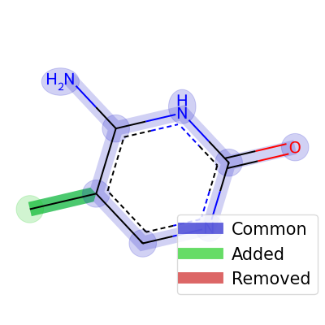
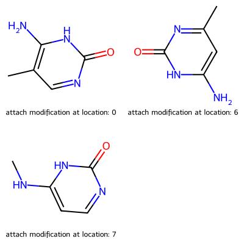
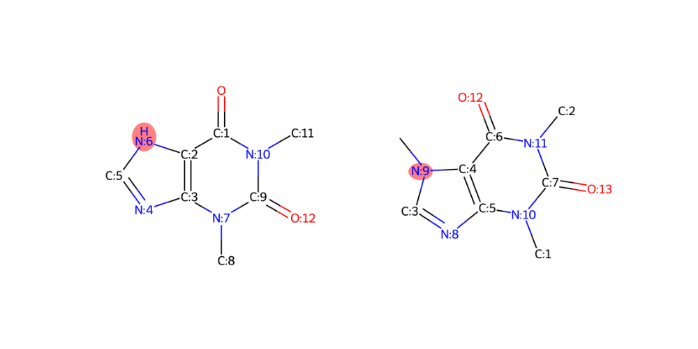

Molecule utilities
Calculates the modification sites between two molecules when one molecule is a substructure of the other molecule |
|
Calculates the modification edges between two molecules when one molecule is a substructure of the other molecule |
|
Calculates the edit distance between mol1 and mol2. |
|
Calculates the edit distance between mol1 and mol2. |
|
Calculates the transition between mol1 and mol2. |
|
Calculates the substructure difference between main_struct and sub_struct when there is exactly one modification edge, |
|
Attaches the attachment structure to main molecule at the attach_location_main and attach_location_attachment with bond_type. |
|
Generates all possible structures after attaching the difference between sub_struct and main_struct to main_struct. |
GNPS Utils - Molecule Utils
This file contains utility functions around molecules and molecules modification based on RDKit library.
- utilities.mol_utils.attach_mols(main_mol, attachment_mol, attach_location_main, attach_location_attachment, bond_type)[source]
Attaches the attachment structure to main molecule at the attach_location_main and attach_location_attachment with bond_type.
- Input:
- main_mol:
rdkit molecule of the main molecule
- attachment_mol:
rdkit molecule of the attachment molecule
- attach_location_main:
the index of the atom in the main molecule where the attachment should be done
- attach_location_attachment:
the index of the atom in the attachment molecule where the attachment should be done
- bond_type:
the type of the bond between the main molecule and the attachment molecule
- Output:
- new_mol:
the new molecule after attachment
- utilities.mol_utils.generate_possible_stuctures(main_struct, sub_struct)[source]
Generates all possible structures after attaching the difference between sub_struct and main_struct to main_struct.
- Input:
- main_struct:
main molecule
- sub_struct:
substructure molecule
- Output:
- list of possible_structures:
all possible structures after attachment with the index of the atom
Example
 import modifinder.utilities.mol_utils as mf_mu import modifinder.utilities.visualizer as mf_vis from matplotlib import pyplot as plt from rdkit import Chem from rdkit.Chem import Draw modification = Chem.MolFromSmiles("C1=C(NC(=O)N=C1)N") mol1 = Chem.MolFromSmiles("CC1=C(NC(=O)N=C1)N") res = mf_mu.generate_possible_stuctures(mol1, modification) img = mf_vis.draw_modifications(modification, mol1) plt.imshow(img) plt.axis("off") plt.show() res_mols = [x[1] for x in res] res_index = ["attach modification at location: " + str(x[0]) for x in res] img = Draw.MolsToGridImage(res_mols, molsPerRow=2, subImgSize=(200, 200), legends=res_index) display(img)
- utilities.mol_utils.get_edit_distance(mol1, mol2)[source]
Calculates the edit distance between mol1 and mol2.
- Input:
- mol1:
first molecule
- mol2:
second molecule
- Output:
- edit_distance:
edit distance between mol1 and mol2
- utilities.mol_utils.get_edit_distance_detailed(mol1, mol2, mcs=None)[source]
Calculates the edit distance between mol1 and mol2.
- Input:
- mol1:
first molecule
- mol2:
second molecule
- mcs:
the maximum common substructure between mol1 and mol2
- Output:
- removed edges:
the removed modification edges
- added edges:
the added modification edges
- utilities.mol_utils.get_modification_edges(mol1, mol2, only_outward_edges=False)[source]
Calculates the modification edges between two molecules when one molecule is a substructure of the other molecule
- Input:
- mol1:
first molecule
- mol2:
second molecule
- only_outward_edges:
bool, if True, only the modification edges that go from atoms in the substructure to atoms outside the substructure are returned
- Output:
list of the the modification edges in the parent molecule as tuples of atom indices
- utilities.mol_utils.get_modification_graph(main_struct, sub_struct)[source]
- Calculates the substructure difference between main_struct and sub_struct when there is exactly one modification edge,
if there are multiple modification edges, one of the modifications is returned randomly.
- Input:
- main_struct:
main molecule
- sub_struct:
substructure molecule
- Output:
- all_modifications:
a list of the modifications structures, each modification is a tuple of: 1. the modified subgraph molecule (as an rdkit editable molecule) 2. a dictionary that maps the wildcard atom indices in subgraph to its true index in the main molecule 3. the SMARTS representation of the modification
- utilities.mol_utils.get_modification_nodes(mol1, mol2, in_mol1=True)[source]
Calculates the modification sites between two molecules when one molecule is a substructure of the other molecule
- Input:
- mol1:
first molecule
- mol2:
second molecule
- in_mol1:
bool, if True, the modification sites are given in the mol1, if False, the modification sites are given in the mol2
- Output:
list of modification sites
Example
import modifinder.utilities.mol_utils as mf_mu import modifinder.utilities.visualizer as mf_vis from matplotlib import pyplot as plt from rdkit import Chem def mol_with_atom_index(mol): for atom in mol.GetAtoms(): atom.SetAtomMapNum(atom.GetIdx()) return mol mol1 = mol_with_atom_index(Chem.MolFromSmiles("O=C1C2=C(N=CN2)N(C)C(N1C)=O")) mol2 = mol_with_atom_index(Chem.MolFromInchi("InChI=1S/C8H10N4O2/c1-10-4-9-6-5(10)7(13)12(3)8(14)11(6)2/h4H,1-3H3")) edit_in_mol1 = mf_mu.get_modification_nodes(mol1, mol2, True) edit_in_mol2 = mf_mu.get_modification_nodes(mol1, mol2, False) fig, ax = plt.subplots(1, 2, figsize=(10, 5)) ax[0].imshow(mf_vis.draw_molecule(mol1, highlightAtoms=edit_in_mol1)) ax[1].imshow(mf_vis.draw_molecule(mol2, highlightAtoms=edit_in_mol2)) for i in range(2): ax[i].axis("off") plt.show() print("edit_in_mol1", edit_in_mol1) print("edit_in_mol2", edit_in_mol2)
>>> edit_in_mol1 6 >>> edit_in_mol2 9
- utilities.mol_utils.get_transition(input1, input2)[source]
Calculates the transition between mol1 and mol2.
- Input:
- input1:
first molecule
- input2:
second molecule
- Output:
- result:
a dictionary with the following keys:
merged_mol: the merged molecule
common_bonds: the common bonds between mol1 and mol2
common_atoms: the common atoms between mol1 and mol2
removed_atoms: the removed atoms from mol1
added_atoms: the added atoms from mol2
modified_added_edges_inside: the added edges inside the common substructure
modified_added_edges_bridge: the added edges between the common substructure and the added atoms
modified_removed_edges_inside: the removed edges inside the common substructure
modified_removed_edges_bridge: the removed edges between the common substructure and the removed
added_edges: the added edges that are not modification edges
removed_edges: the removed edges that are not modification edges